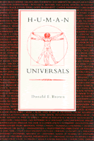

<body bgcolor="#FFFFFF" text="#000000" link="#0000FF" vlink="#CC0000" alink="#CC0000"><center><hr width="350" size="1" align="center" noshade>Challenging the assumption that human behavior is primarily determined by culture, Brown hypothesizes about universal traits<hr width="350" size="1" align="center" noshade><p><a href="https://cdcshoppingcart.uchicago.edu/Cart/ChicagoBook.aspx?ISBN=9780877228417&&PRESS=temple" target="_top">Buy this book!</a> | <a href="https://cdcshoppingcart.uchicago.edu/Cart/Cart.aspx?PRESS=temple" target="_top">View Cart</a> | <a href="https://cdcshoppingcart.uchicago.edu/Cart/Cart.aspx?PRESS=temple" target="_top">Check Out</a></p><p></p></center><!--none//--><h1>Human Universals</h1>
<h3>Donald E. Brown</h3>
<P>cloth 0-87722-841-8 $44.95, May 91, <FONT COLOR=#990033>Out of Print</FONT>
<BR> 220 pp
</P><p>Challenging the assumption that human behavior is primarily determined by culture, Donald E. Brown contends that certain behavioral traits are common to human beings everywhere. In <I>Human Universals</I>, he addresses the problems posed for anthropology by the topic of universals, discusses studies that have caused anthropologists to rethink their position, and provides an ethnography of "The Universal People."
<p>Although human universals were of considerable interest to early anthropologists, a later emphasis on sociocultural determinants of behavior produced an ambivalence both toward universals and the concept of human nature. This ambivalence toward universals has persisted since the 1920s. However, six important case studies involving the classification of basic colors, facial expressions of emotion, sex roles, time, adolescent stress, and the Oedipus Complex have reopened this nearly taboo topic.
<p>After he discusses the distinctions between the various kinds of universals, the history of attempts to study universals, and the means by which universality may be demonstrated and explained, Brown presents a list of approximately four hundred human universals in the form of an ethnography that describes any and all peoples known to anthropologists.
<BR>&nbsp;<h2>Contents</h2><P>
<p>Preface
<br>Introduction
<p>1. Rethinking Universality: Six Cases
<br><I>Color Classification &#149
Samoan Adolescence &#149
Male and Female among the Tchambuli &#149
Facial Expressions &#149
Hopi Time &#149
The Oedipus Complex</I>
Conclusion
<p>2. Conceptualizing, Defining, and Demonstrating Universals
<p>3. The Historical Context of the Study of Universals
<p>4. Explaining Universals
<br><I>Explaining a Universal with a Universal &#149
Cultural Reflection or Recognition of Physical Fact &#149
Logical Extension from (Usually Biological) Givens &#149
Diffusionist Explanations that Rest upon the Great Age of the Universal and, Usually, Its Great Utility &#149
Archoses &#149
Conservation of Energy &#149
The Nature of the Human Organism, with Emphasis on the Brain &#149
Evolution Theory &#149
Interspecific Comparison &#149
Ontogeny &#149
Partial Explanations</I>
<p>5. Incest Avoidance
<p>6. The Universal People
<p>7. Universals, Human Nature, and Anthropology
<p>Bibliography
<br>Index
</P><BR>&nbsp;<H2>About the Author(s)</H2>
<P><b>Donald E. Brown</b> is a Professor of Anthropology at the University of California, Santa Barbara.</P>
<BR><H2>Subject Categories</H2>
<p><A HREF="/tempress/anthropology.html" TARGET="_top">Anthropology</a>
</p>
<p align="center"><a href="https://cdcshoppingcart.uchicago.edu/Cart/ChicagoBook.aspx?ISBN=9780877228417&&PRESS=temple" target="_top">Buy this book!</a> | <a href="https://cdcshoppingcart.uchicago.edu/Cart/Cart.aspx?PRESS=temple" target="_top">View Cart</a> | <a href="https://cdcshoppingcart.uchicago.edu/Cart/Cart.aspx?PRESS=temple" target="_top">Check Out</a></p><p><font face="Arial" size="1"><a href="copyright.html" onMouseOver="window.status='Web Copyright Policy';return true;" onMouseOut="window.status=''" title="Web Copyright Policy">&copy;</a> 2015 <a href="http://www.temple.edu" target="new" onMouseOver="window.status='Link to Temple University home page';return true;" onMouseOut="window.status=''" title="Link to Temple University home page">Temple University</a>. All Rights Reserved. http://www.temple.edu/tempress/titles/864_reg.html</font></p>